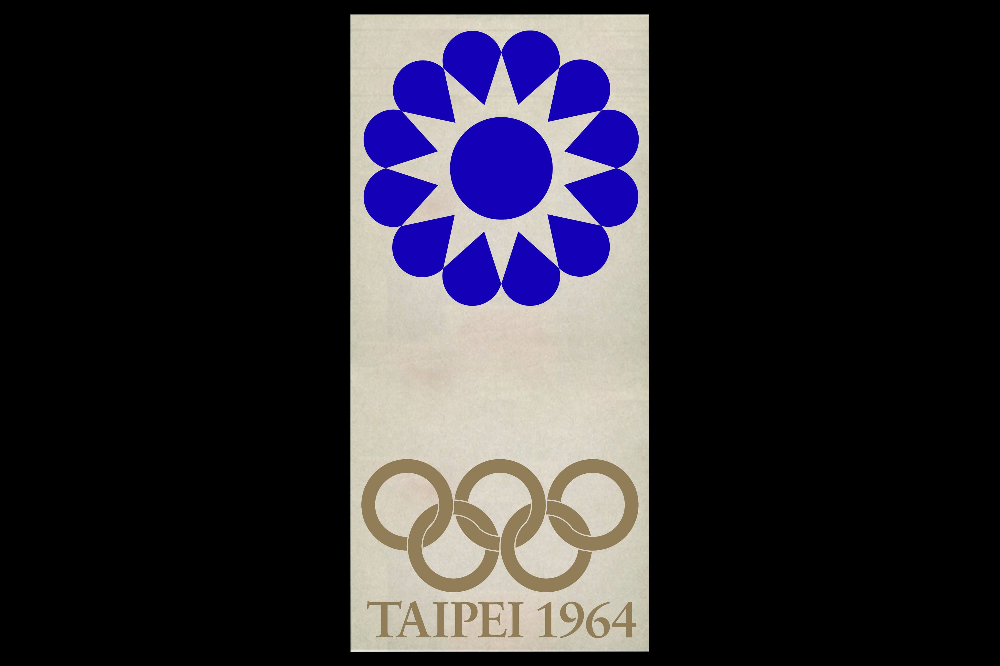
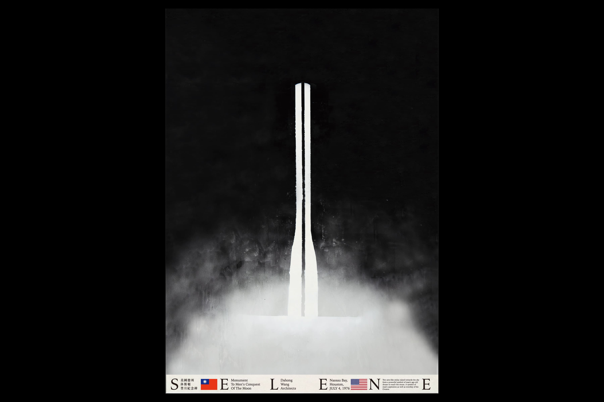
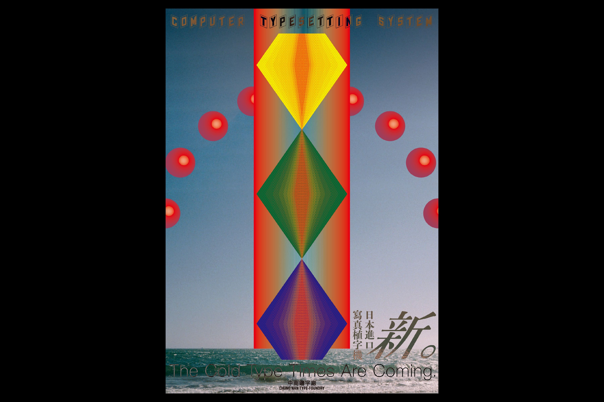
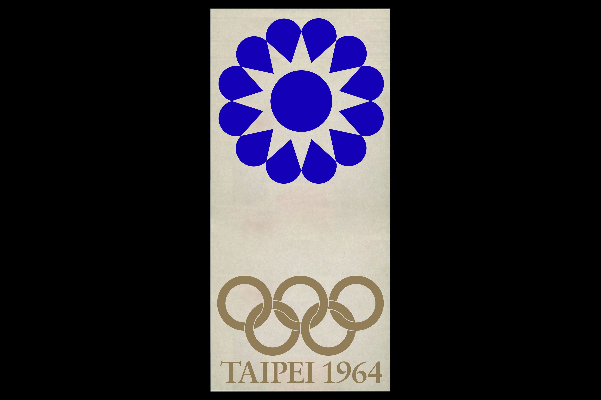
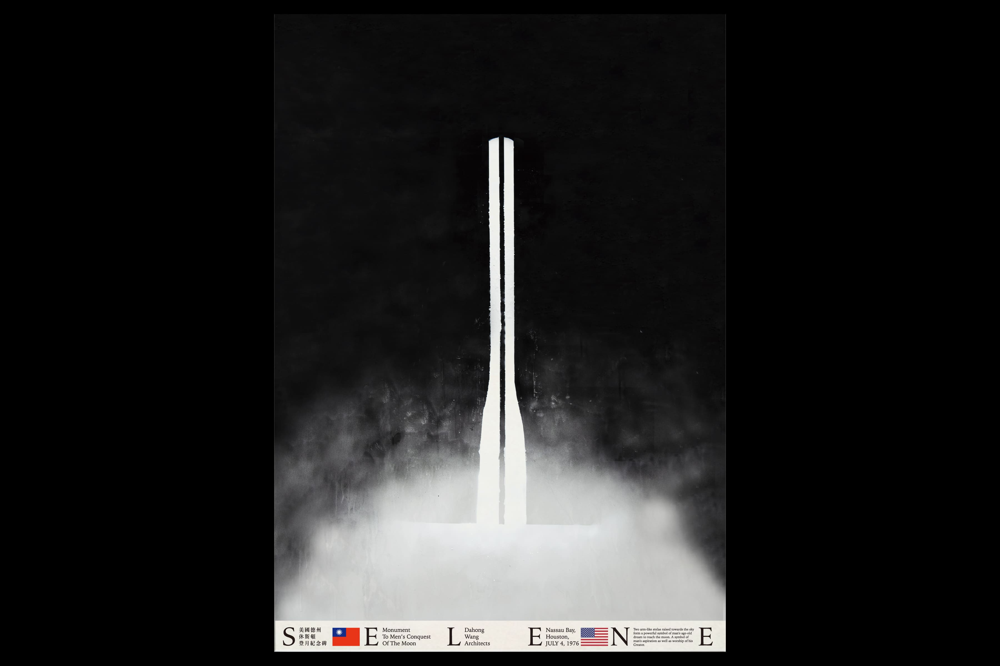
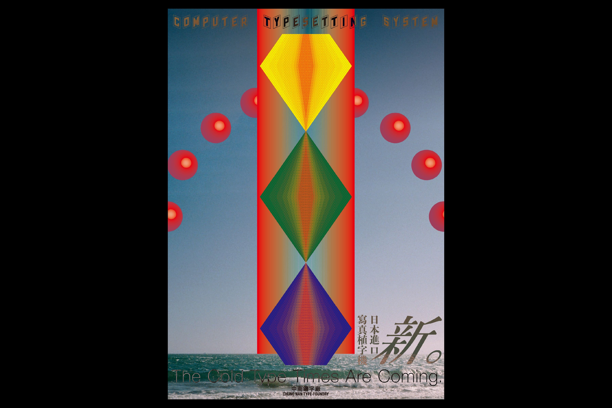

臺灣近代平面設計的發展因受社會著重於工業發展、急欲追逐西方現代化的影響，設計角色的價值判准以「商業主義」「功能主義」「實證主義」等奉為圭臬至今。本計劃挖掘自六〇年代伊始，與平面設計有關但未竟的十一個事件作為客體；賦予作者穿越時空的能力，還原時代語境補遺作品，藉以討論歷史遺留桎梏與當代造型間的權力關係。
手、電腦、印刷
W1040 × H760 mm（11張）
| TYPE | 平面設計 | ||
| DEPARTMENT | 商業設計 | ||
| +DESIGNER(S) | 劉育齊 |
| 劉育齊 |
2000年生於臺灣臺北，現就讀國立臺灣科技大學設計系商業設計組，主修平面設計。期間加入團體「藍蜻蜓」（2020-2021）、「ㄓㄉ研（紙袋同好研究會）」（2021）與「大仙貝酥」（2021-）等。
CONTACTwww.traumerei-editions.tw |
| ADVISOR(S) | 蕭勝文 |